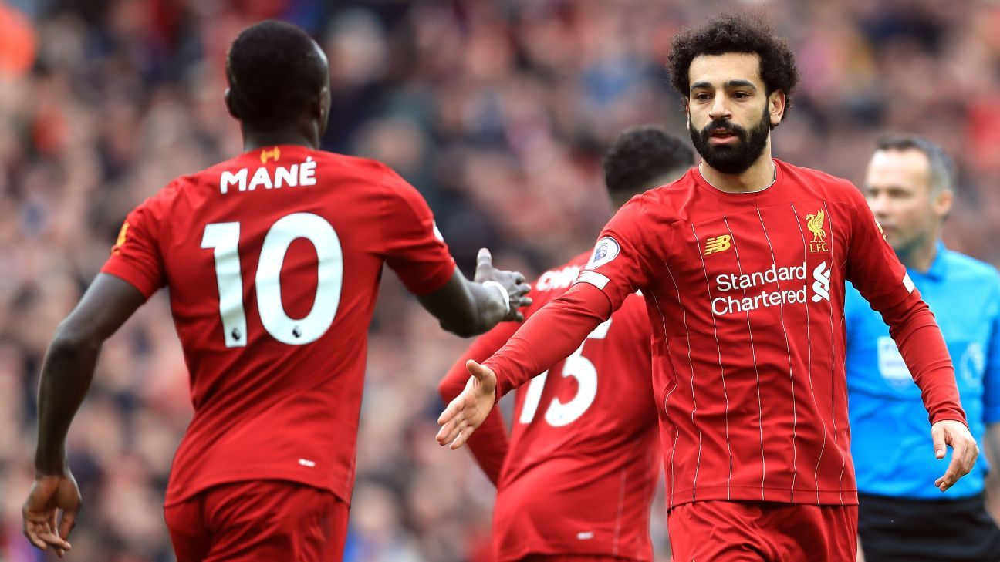

RESULTS :
Matchday 29
| Leicter |
4 - 0 |
Aston Villa |
| Chelsea |
4 - 0 |
Everton |
| Man Utd |
2 - 0 |
Man City |
| Liverpool |
2 - 1 |
Bournemouth |
| Arsenal |
1 - 0 |
West Ham |
| Crystal Palace |
1 - 0 |
Watford |
| Sheffield Utd |
1 - 0 |
Nowrich |
| Southampton |
0 - 1 |
Newcastle |
| Wolves |
0 - 0 |
Broghton |
| Burnley |
1 - 1 |
Spurs |
SCORRERES :
| # |
Player |
GOALS |
Club |
| 1. |
Vardy |
19 |
Leicester |
| 2. |
Aubameyang |
17 |
Arsenal |
| 3. |
Salah |
16 |
Liverpool |
| 4. |
Aguero |
16 |
Man City |
| 5. |
Ings |
15 |
Southampton |
|
LaLiga NEWS :

Liverpool returns to WIN again
Liverpool set about their customary brisk start in the lunchtime kick-off but it was the visitors who broke through first – despite the hosts’ protestations.
Wilson’s push on Joe Gomez was not deemed a foul as Bournemouth countered and they capitalised fully, the ball moving to Philip Billing, Jefferson Lerma and back into the middle for Wilson to convert from close range.
It was nearly two soon after as Adrian pushed Nathan Ake’s firm header from a right-wing corner onto the crossbar.\
Liverpool reasserted themselves, though, and Roberto Firmino drew an important save from Aaron Ramsdale when he held off Steve Cook to collect Trent Alexander-Arnold’s prodded pass into the area and fired at goal.
The equaliser instead arrived on 24 minutes.
Mane spotted an opportunity to press Jack Simpson, recently introduced as a substitute, high up the pitch and successfully stole the ball and bore down on goal.
He elected to tee up Salah to his right and despite the pass coming slightly behind him, the Egyptian set his shooting position and threaded a sweet reverse finish into the bottom corner.
Simpson then had to clear from inside the six-yard box as Alexander-Arnold smacked a cross towards the waiting Mane.
The Reds did complete a turnaround before the interval, however, and this time Mane took care of the scoring himself.
Virgil van Dijk’s anticipation made the chance, the centre-back seizing on a loose ball around the halfway line and immediately sliding an assist into the run of an unmarked Mane. An unerring, swept shot beyond Ramsdale followed.
Liverpool dominated possession from the restart without generating any clear-cut chances.
And they required an outstanding piece of defensive recovery from Milner on the hour mark to preserve their slender lead.
Ryan Fraser neatly timed his run to break in behind the Reds defence off the flank and with Adrian heading out from his goalline, the Bournemouth man lifted the ball up and over him towards the empty net.
Milner rushed back, though, and stretched to produce a crucial clearance away from danger.
Van Dijk guided a header from a corner too close to Ramsdale and Firmino’s persistence then forced an opening, his driven cross-shot drifting wide of the target and Mane at the back post.
Next, Mane opted for a more direct route by dispatching a sumptuous curler from the left corner of the Cherries box that thudded off the upright and away, before Ramsdale touched Salah’s low hit wide of the same post.
In the end, a third was not required for a win that moves Liverpool within nine points of clinching the Premier League title.
Man Utd. defeat Man City in Manchester Derby
Marcus Rashford and Anthony Martial fired United into an early lead and although Nicolas Otamendi's late reply set up a thrilling finale, the visitors held on for arguably the most impressive victory of Ole Gunnar Solskjaer's 12-month reign.
Both United goals came in a breathless opening half-hour at Etihad Stadium, where they repeatedly carved open City's creaking back-line to devastating effect.
Rashford opened the scoring from the spot after he was clumsily knocked over by Bernardo Silva, with the penalty awarded by video assistant referee Michael Oliver.
The in-form England striker, who has now scored 13 goals in his past 14 games for club and country, hit the bar moments later but United did not have to wait long to extend their lead.
United's next attack saw Daniel James find Anthony Martial on the right of the area, and he had space to turn and squeeze his shot inside Ederson's near post.
City had never trailed by two goals so early in a home league game since Pep Guardiola took charge in 2016 and their fans were left in stunned silence as United's supporters celebrated noisily at the other end of the stadium.
While the home side finally began to get a grip on the game after that, especially in midfield, the damage was done.
City had repeated penalty appeals for United handballs turned down by referee Anthony Taylor and VAR before the break, while Gabriel Jesus wastefully headed a Kevin de Bruyne cross wide.
United continued to defend deep after the break but City struggled to create meaningful chances and Otamendi's header from a Mahrez corner could not rescue them from their fourth league defeat of the season.
The game was marred by allegations of racist abuse towards United midfielder Fred in the second half, while there were also reports of objects being thrown at him from the stands.
Chelseae earn 3 points with a big win against Everton
Academy product Mason Mount opened the scoring on 14 minutes on a day when Frank Lampard handed another rising star his chance in Billy Gilmour, who excelled in the Blues' FA Cup win over Liverpool. Gilmour excelled once again, earning the man of the match award for his efforts.
EDITOR'S PICKS Gilmour has revitalised Chelsea, but can Lampard's Blues finally find consistency?
Chelsea's Gilmour earns 7/10 on first Premier League start vs. Everton
Pedro made it 2-0 midway through the first half and Everton had no way back, with Willian making three on 51 minutes before Olivier Giroud made it four.
The result solidified Chelsea's position in fourth and moved them to within two points of Leicester in third, while Everton's bid for European football next season took a dent with Carlo Ancelotti's men ending the day in 12th following the joint-heaviest defeat of his managerial career.
"Everything went wrong. It is not difficult to judge this game or analyse this game. We were too open defensively, we lost a lot of duels, we made a lot of mistakes with the ball. It was not a good day. What we can do is learn from our mistakes," Ancelotti said.
"We think we can compete to fight for Europe over the next season. With this type of performance we have to forget [that]."
Everton coach Ancelotti received a warm welcome from the Chelsea fans as he returned to Stamford Bridge, where he won the double with the club in 2010.
pickford did well to deny Willian moments later but could do nothing to stop Pedro doubling the lead on 22 minutes. Former Everton midfielder Ross Barkley played Pedro through and he made no mistake, slotting the ball home to deepen the away side's misery.
Dominic Calvert-Lewin wasted a glorious opportunity to respond five minutes later but he screwed his shot wide when through on goal.
It was a familiar story in the second half, with Willian netting his fifth league goal of the season with a fine arrowed drive that gave Pickford no chance and put the game beyond doubt.
Willian then turned provider, sending over a teasing ball that Giroud met to flick the ball home moments later.
The only sour note on an otherwise positive afternoon for Lampard came when Mount was substituted on the hour mark, clutching his hamstring as he walked towards the dressing room.
|
STANDING :
| # |
Club |
Pts. |
| 1 |
Liverpool |
82 |
| 2 |
Man City |
57 |
| 3 |
Leicester |
53 |
| 4 |
Chelsea |
48 |
| 5 |
Man Utd |
45 |
| 6 |
Wolves |
43 |
| 7 |
Sheffield Utd |
43 |
| 8 |
Spurs |
41 |
| 9 |
Arsenal |
40 |
| 10 |
Burnley |
39 |
| 11 |
Crystal Palace |
39 |
| 12 |
Everton |
37 |
| 13 |
Newcastle |
35 |
| 14 |
Southhampton |
34 |
| 15 |
Brighton |
29 |
| 16 |
West Ham |
27 |
| 17 |
Watford |
27 |
| 18 |
Bournemouth |
27 |
| 19 |
Aston Villa |
25 |
| 20 |
Nowrich |
21 |
Next week matches :
Watford - Leicester
Bournemouth - Crystal Palace
Brighton - Arsenal
Man City - Burnley
Newcastle - Sheff Utd
Norwich - Southampton
Aston Villa - Chelsea
Spurs - Man Utd
West Ham - Wolves
Everton - Liverpool
|